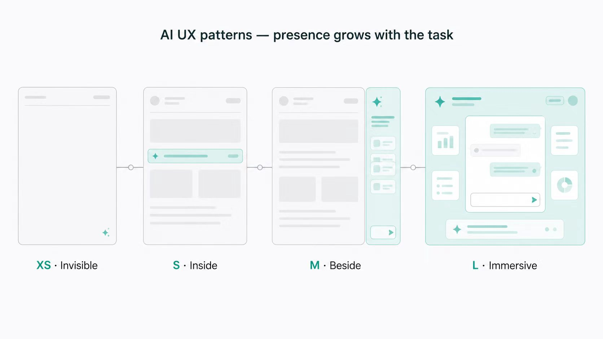
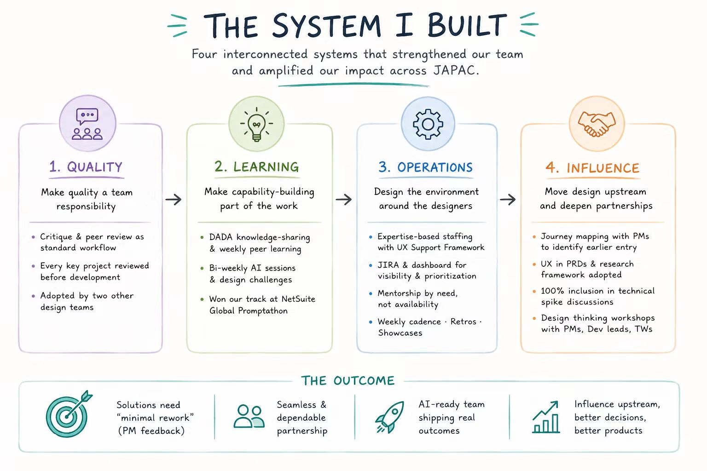
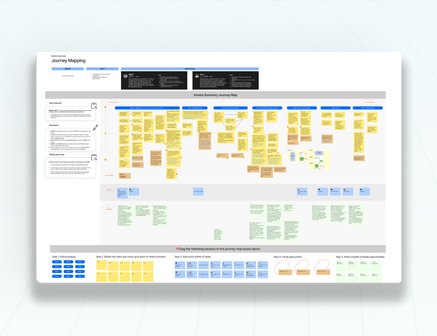
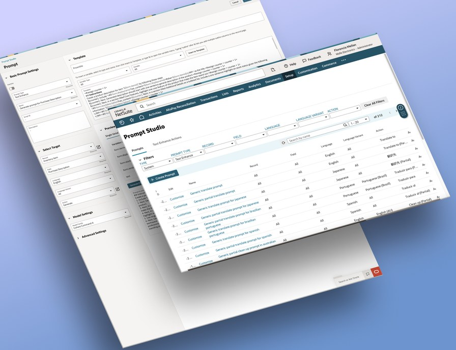
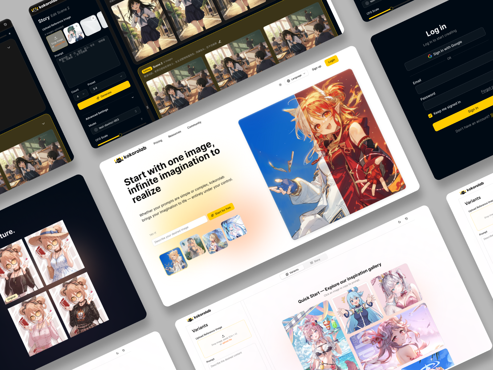
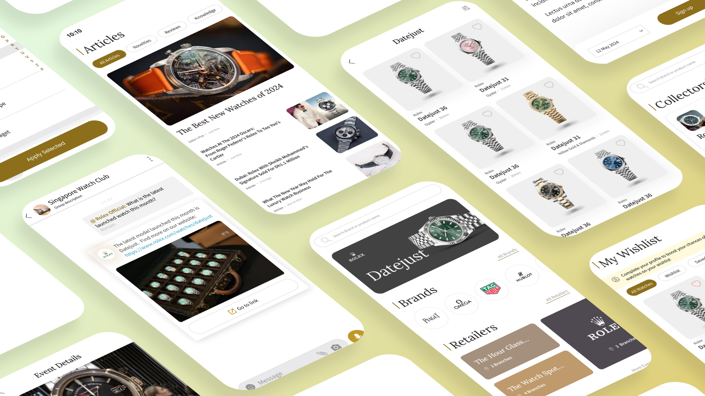
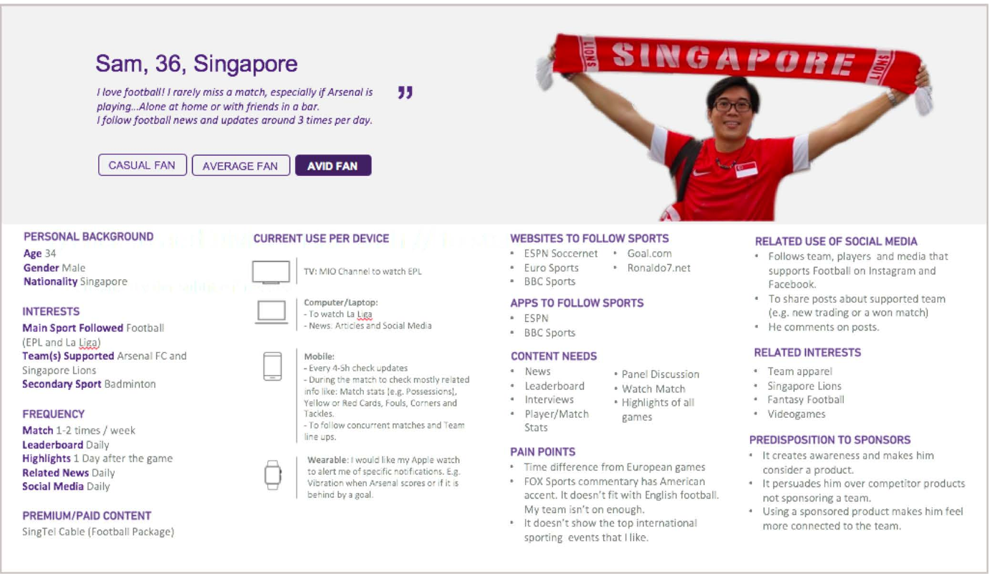
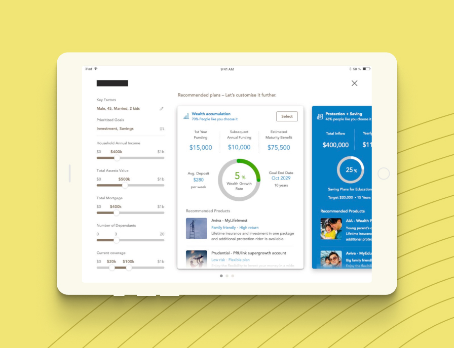

Boyi Yang
UX Manager · Oracle NetSuite · Singapore
I lead design teams that make enterprise AI feel simple.
14+ years across enterprise SaaS, AI, and mobile. I manage the JAPAC UX team at Oracle NetSuite, where I helped define the design patterns behind NetSuite’s first generation of AI features — two of which were demoed in SuiteWorld keynotes.
Design strategy & leadership
Shaping AI UX at NetSuite
When generative AI arrived, our ERP had no design playbook for it. I led the pattern work that became NetSuite’s AI design guidelines — and shipped the features that used them.

Building the system behind a high-performing design team
How I built the practices, capabilities, and partnerships that helped a distributed design team raise its quality and influence — without making quality depend on me.

Product work
Compliance with an experience dividend
Japan’s new tax invoice law gave us a hard deadline. We used it as a catalyst to redesign the entire Invoice Summary experience — meeting the regulation and fixing years of accumulated friction.

Text Enhance, designed twice
NetSuite’s AI writing assistance under two opposite constraint sets — shipped in the legacy product, then redesigned from telemetry for NetSuite Next and defined as a design-system component.
Prompt Studio: from developer tool to product
Redesigning NetSuite’s prompt customization tool in the earliest days of generative AI — when nobody knew yet what “good” looked like.

Kokorolab: an AI image tool for animation fans
My freelance project, and my return to consumer products after six years in enterprise B2B: the only UX on a live AI image product, strategy to execution. 52% activation, 31% day-7 retention, 4.1% paid conversion.

Designing a phone number component for global users
Designing NetSuite Next’s international phone number component — the kind of “small” component that touches every record, every invoice, and every country’s formatting rules at once.
TimeWorld: a unique product for luxury watch collectors
A pre-AI freelance engagement: the app for watch collectors, with 18 luxury brands on board — strategy, information architecture, and a design system built entirely from scratch, as the only UX on the team.

Fox Sports Asia: an end-to-end responsive site redesign
From my agency-era consumer work: stakeholder workshops, fan personas, and wireframes that doubled as the product spec — content consumption up 11% after launch.

PIAS: an advisor-facing financial planning tool
A tablet and web service for financial advisors who sit face to face with clients — two users, one screen, and a concept tested for comprehension before any build.

Earlier work
A decade of consumer products — Fox Sports, Aviva, 1M-user apps
About me
Product management → UX → design leadership